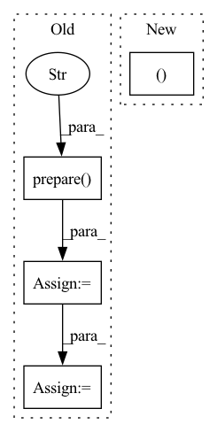

Pattern ID :24909

Before Change
sr.generate()
pred_score = sr.load()
y_test = dataset.prepare("test", col_set="label")
pred_score, y_test, __ = drop_nan_by_y_index(pred_score, y_test)
model_pearsonr = pearsonr(np.ravel(pred_score.values), np.ravel(y_test.values))[0]
return pred_score, {"model_pearsonr": model_pearsonr}, rid
After Change
ic = sar.load(sar.get_path("ic.pkl"))
ric = sar.load(sar.get_path("ric.pkl"))
return pred_score, {"ic": ic, "ric": ric}, rid
def backtest_analysis(pred, rid):
backtest and analysis
In pattern: SUPERPATTERN
Frequency: 3
Non-data size: 4
Instances
Fragment ID: 76735314
Project Name: microsoft/qlib
Commit Name: 89586562226b1f3aaf4b38ef283af92ffe105e71
Time: 2020-11-21
Author: dw1920@nyu.edu
File Name: tests/test_all_pipeline.py
M Class Name: AnonimousClass
N Class Name: AnonimousClass
M Method Name: train(0)
N Method Name: train(0)
M Parent Class:
N Parent Class:
M File Name: tests/test_all_pipeline.py
N File Name: tests/test_all_pipeline.py
M Start Line: 112
M End Line: 130
N Start Line: 119
N End Line: 131
'>
Before Change
save_path=None,
):
dl_train = dataset.prepare("train", col_set=["feature", "label"], data_key=DataHandlerLP.DK_L)
dl_valid = dataset.prepare("valid", col_set=["feature", "label"], data_key=DataHandlerLP.DK_L)
dl_train.config(fillna_type="ffill+bfill") // process nan brought by dataloader
dl_valid.config(fillna_type="ffill+bfill") // process nan brought by dataloader
train_loader = DataLoader(
dl_train, batch_size=self.batch_size, shuffle=True, num_workers=self.n_jobs, drop_last=True
)
valid_loader = DataLoader(
After Change
save_path=None,
):
df_train, df_valid, df_test = dataset.prepare(
["train", "valid", "test"],
col_set=["feature", "label"],
data_key=DataHandlerLP.DK_L,
'>
Fragment ID: 76735312
Project Name: microsoft/qlib
Commit Name: bee031af68cd0864c8329de13608c2d4feb58fc1
Time: 2021-07-21
Author: yl3851@uw.edu
File Name: qlib/contrib/model/pytorch_localformer.py
M Class Name: LocalformerModel
N Class Name: LocalformerModel
M Method Name: fit(4)
N Method Name: fit(4)
M Parent Class: Model
N Parent Class: Model
M File Name: qlib/contrib/model/pytorch_localformer.py
N File Name: qlib/contrib/model/pytorch_localformer.py
M Start Line: 154
M End Line: 165
N Start Line: 173
N End Line: 200
'>
Before Change
save_path=None,
):
dl_train = dataset.prepare("train", col_set=["feature", "label"], data_key=DataHandlerLP.DK_L)
dl_valid = dataset.prepare("valid", col_set=["feature", "label"], data_key=DataHandlerLP.DK_L)
dl_train.config(fillna_type="ffill+bfill") // process nan brought by dataloader
dl_valid.config(fillna_type="ffill+bfill") // process nan brought by dataloader
train_loader = DataLoader(
dl_train, batch_size=self.batch_size, shuffle=True, num_workers=self.n_jobs, drop_last=True
)
valid_loader = DataLoader(
After Change
data_key=DataHandlerLP.DK_L,
)
x_train, y_train = df_train["feature"], df_train["label"]
x_valid, y_valid = df_valid["feature"], df_valid["label"]
save_path = get_or_create_path(save_path)
'>
Fragment ID: 76735322
Project Name: microsoft/qlib
Commit Name: bee031af68cd0864c8329de13608c2d4feb58fc1
Time: 2021-07-21
Author: yl3851@uw.edu
File Name: qlib/contrib/model/pytorch_transformer.py
M Class Name: TransformerModel
N Class Name: TransformerModel
M Method Name: fit(4)
N Method Name: fit(4)
M Parent Class: Model
N Parent Class: Model
M File Name: qlib/contrib/model/pytorch_transformer.py
N File Name: qlib/contrib/model/pytorch_transformer.py
M Start Line: 151
M End Line: 162
N Start Line: 172
N End Line: 199